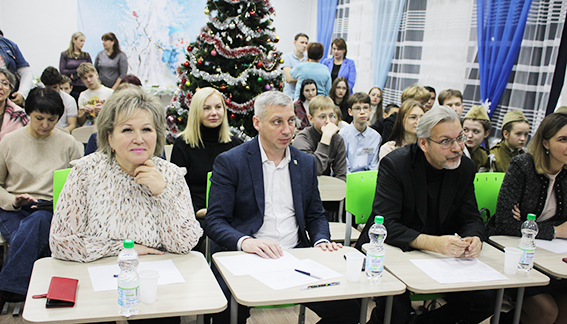

Музейный хаб

О проекте
В Центре внешкольной работы состоялся городской хакатон на тему «Войны священные страницы». Программы призёров войдут в экспозиции виртуального музея «Боровичи — город трудовой доблести».
Проект направлен на поиск информационной базы и создание в сети Интернет виртуальной комнаты, посвящённой одной из тем военного прошлого Боровичей. Эта разработка позволит объединить молодое поколение боровичан в команды единомышленников, которые смогут не только сформировать информационную базу из архивных документов, фотографий и видеовоспоминаний жителей и тружеников тыла, но и создать информационную виртуальную комнату, способную сохранить эти священные страницы в памяти боровичан нынешнего и будущего поколений.
Проект получил грантовую поддержку на субсидию социально ориентированным некоммерческим организациям, реализующим социально значимые проекты на территории Боровичского муниципального района.
Команда школы №8
Наставник — Манвел Каренович Арутюнян.
Участники команды: Антон Кудрявцев, Григорий Вишняков, Владимир Дедук, Владислав Ершов, Евгений Вересов.
Тема виртуальной комнаты: «Промышленность в Боровичах в годы Великой Отечественной войны».
Как проходил хакатон
Во втором городском хакатоне приняли участие школьники 4-й, 8-й, 9-й, Перёдской и Волгинской школ. Пять команд в течение двух дней разрабатывали видеопрограммы на разные темы:
- Школа п. Волгино — «Дети в Боровичах в годы Великой Отечественной войны»
- Школа д. Перёдки — «Боровичи — город-госпиталь»
- Школа №4 — «Культура в Боровичах в годы Великой Отечественной войны»
- Школа №8 — «Промышленность в Боровичах в годы Великой Отечественной войны»
- Школа №9 — «Всё для фронта, всё для Победы»
Во время соревнований состоялись мастер-классы по программированию, презентации проектов, выступления экспертов. Волонтёры Боровичского местного отделения Всероссийского общественного движения «Волонтёры Победы» провели с ребятами интеллектуальную игру РИСК на тему «Великая Отечественная война».
На презентации в жюри присутствовали почётные гости — сенатор РФ Елена Писарева и глава района Андрей Герасимов. По итогам защиты проектов победителем стал коллектив 9-й школы.